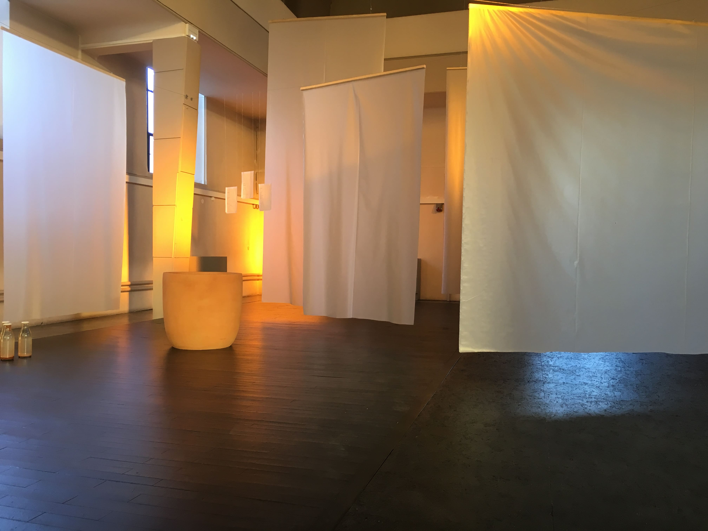
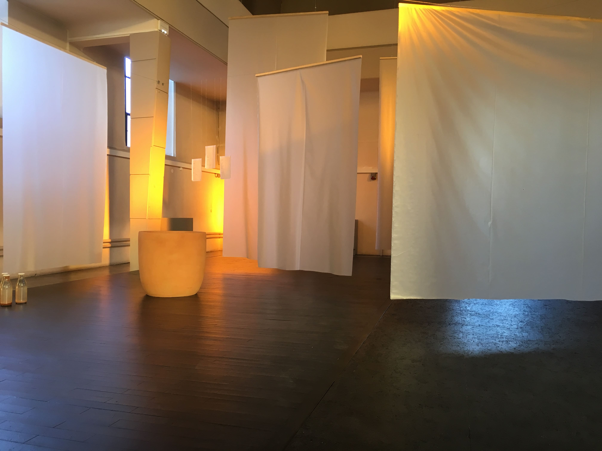

Dans une piscine
Installation vidéo, 2019
En 2018 j’ai réalisé le court-métrage Piscine à la piscine olympique de Forbach. La préparation du tournage, ainsi que le tournage lui-même ont provoqué multiples rencontres et discussions avec les habitants du territoire. Si le flm ne raconte pas spécifquement la piscine de Forbach, l’installation sur trois écrans crée un portrait de cet espace en particulier. Un lieu architectural. Un lieu fonctionnel et technique. Un lieu d’échange social. L’espace simple devient alors complexe par la multitude des lectures possibles
___
Journal du bord :
De belles rencontres cinématographiques et documentaires ont eu lieu pendant le tournage d’un autre film. Mais parfois, le film impose autre chose que ce qu’on avait prévu au départ. Je me suis ainsi retrouvée avec de nombreux entretiens et des séquences filmées à la piscine. C’est comme ça que cette installation est née.
 
